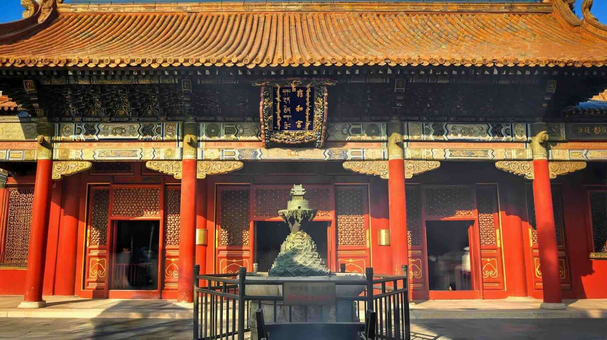

June 10, 2026
|
Wander Any Place
Old Beijing Douzhi
Why Jensen Huang's Painful Face Made This Heritage Drink Go Viral
Explore Beijing's historic hutongs and discover the city's authentic charm through our curated walking routes
Beijing's hutongs are ancient alleyways that wind through the heart of the city, offering a glimpse into traditional Chinese life. These narrow streets, lined with courtyard houses, have been home to generations of Beijingers.
A walk through the hutongs is like stepping back in time. You'll encounter local residents going about their daily lives, small family-run shops, and hidden courtyards that tell stories of Beijing's rich history.
Our curated walking routes focus on the Second Ring Road area, where some of Beijing's most authentic hutong neighborhoods are preserved. Each route offers a unique perspective on the city's culture and history.

Explore the main street and side hutongs, capture photos of the Drum Tower with red walls and trams, shop for traditional "Rabbit God" dolls in Yandai Xiejie, enjoy the Western Hills view from Silver Ingot Bridge, and watch the sunset at Shichahai.
Line 1: 鼓楼->南锣鼓巷->什刹海 Drum Tower->Nanluoguxiang->Shichahai
Starting point
A charming alleyway full of old Beijing charm, with many former residences of famous people and historical stories
China's earliest Wealth God Temple, where you can pray for prosperity
Capture photos of the Drum Tower with red walls and trams
🥞 Chao Gan (Fried Liver) Restaurant:姚记炒肝 Yaoji ChaoganEnjoy the night view of Beijing and visit Houhai Bar Street
🍸 Houhai Bar StreetGo ice skating and ice cart riding in winter
Visit Beihai Park, see guide here

鼓楼 -> 南锣鼓巷 -> 什刹海
Drum Tower -> Nanluoguxiang -> Shichahai Route Map
Starting from Longfu Temple, explore the variety stores on Dongsi North Street, take film-style photos with vintage backdrops, admire the imperial steles at Guozijian, and enjoy delicious food in Wudaoying Hutong.
Line 2: 隆福寺->东四北大街->雍和宫大街->国子监街->五道营胡同 Longfu Temple -> Dongsi North Street -> Yonghegong Street -> Guozijian Street -> Wudaoying Hutong
Starting point, explore Longfu Temple and visit Hutong Museum to learn about Beijing hutong culture
Try Chinese pastries and traditional snacks, such as 红心点心局（Hongxin Dim Sum Shop), 稻香村零号店(Daoxiangcun Flagship Store), and 茶饼斋（Tea Cake Studio）
Visit this traditional Tibetan Buddhist temple in Beijing. See details here
Visit the Imperial Academy. See details here
A 700-meter street filled with boutique shops and specialty restaurants, each offering unique surprises
🍜 Michelin Restaurant Restaurant:京兆尹 Jing Zhao Yin
隆福寺 -> 东四北大街 -> 雍和宫大街 -> 国子监街 -> 五道营胡同
Longfu Temple -> Dongsi North Street -> Yonghegong Street -> Guozijian Street -> Wudaoying Hutong
Pray at Lama Temple in the morning, enjoy coffee in Wudaoying Hutong in the afternoon, admire the red walls and green tiles at Guozijian, and take a stroll in Ditan Park at dusk.
Line 3: 雍和宫 -> 国子监街 -> 五道营胡同 -> 地坛公园 Lama Temple -> Guozijian Street -> Wudaoying Hutong -> Ditan Park
Visit this traditional Tibetan Buddhist temple in Beijing. See details here
Visit the Imperial Academy. See details here
A 700-meter street filled with boutique shops and specialty restaurants, each offering unique surprises
🍜 Michelin Restaurant Restaurant:京兆尹 King JoyA park with a rich history and beautiful views. See details here

Lama Temple -> Ditan Park Route Map
Explore the Xisi area: the red walls of White Pagoda Temple are iconic, Zhengyang Bookstore offers rare old books, and the stained glass windows at Xishiku Church are breathtakingly beautiful.
Line 4: 阜成门->白塔寺->历代帝王庙->广济寺->正阳书局->西什库教堂 Fuchengmen -> White Pagoda Temple -> Temple of Ancient Monarchs -> Guangji Temple -> Zhengyang Bookstore -> Xishiku Church
Starting point
Visit Lu Xun's former residence and exhibition to experience the power of his writings
Spend half a day exploring and eating around White Pagoda Temple. The red walls are perfect for photos
Built in 1531 during the Ming Dynasty, this 500-year-old temple was once an imperial worship site. ¥20 entry fee, no reservation needed
One of Asia's oldest and largest comprehensive geological museums. ¥15 entry fee, no reservation needed
One of Beijing's four famous temples, home to the Buddhist Association of China. Free entry, no reservation needed. Features precious cultural relics including a golden Dharma wheel
A unique bookstore hidden beneath a Yuan Dynasty pagoda, filled with old Beijing charm
A three-story Gothic church with stunning stained glass windows that add unique beauty

Fuchengmen -> Xishiku Church Route Map
Pet cats at Fayuan Temple, then head to Niujie for lamb skewers and Baiji Nian Gao (rice cakes).
Line 5: Lanman Hutong -> Fayuan Temple -> Niujie
Starting point
A 24-hour bookstore with coffee during the day and drinks at night. In summer, enjoy the glass waterfall wall with fish swimming above; in winter, persimmons are displayed in the glass wall.
One of the most artistic hutongs in West Beijing, featuring many chill cafes, shops, and photo spots
A cultural hutong with cafes and tea houses
For more information about Fayuan Temple, see here
Beijing's iconic halal food district and the largest Muslim community area. Its history dates back to the Song and Yuan dynasties. Originally called "Liuhecun", it later became known as Niujie (Ox Street) due to the local Muslims' expertise in beef processing. The Niujie Mosque, built during the Northern Song Dynasty, is Beijing's largest and oldest mosque.

Lanman Hutong -> Fayuan Temple -> Niujie Route Map
Explore old guild halls, design shops, enjoy Chao Gan (fried liver) and Zhajiang noodles, then relax with a cup of coffee.
Line 6: 湖广会馆->杨梅竹斜街->北京坊->前门箭楼->前门大街->西兴隆街 Huguang Guild Hall -> Yangmeizhu Xiejie -> Beijing Fun -> Qianmen Arrow Tower -> Qianmen Street -> Xixinglong Street
Built in 1807, originally the former residence of Zhang Juzheng. It was a performance venue for Peking Opera masters like Mei Lanfang. Sun Yat-sen also held the founding meeting of the Kuomintang here. Key attractions: (1) Grand Theater: A century-old wooden theater with exquisite carvings; (2) Opera Museum: Located in Wenchang Pavilion, showcasing Peking Opera history and Mei Lanfang's collections.
This century-old building standing in southern Beijing is now home to China Bookstore. Known as the "Ship Building" due to its unique shape, it has become a popular spot for many young artists and history enthusiasts.
A 24-hour bookstore with coffee during the day and drinks at night. In summer, enjoy the glass waterfall wall; in winter, persimmons are displayed in the glass wall.
Send letters to your future self or others, also known as "slow mail" service
This 500-meter street blends history and modernity. Highlights: (1) Model Bookstore (模范书局): A vintage bookstore hidden in the hutong; (2) Jingwei Shiguang (京味拾光): A popular photo spot with beautiful courtyard lighting; (3) Qingyunge Site (青云阁旧址): A late Qing entertainment venue frequented by Kang Youwei and Lu Xun.
Qianmen Street is famous for its century-old shops: (1) Ruifuxiang (瑞蚨祥): A renowned silk shop; (2) Neiliansheng (内联升): A 100-year-old shoe store; (3) Zhang Yiyuan (张一元): A beloved tea house; (4) Wu Yutai (吴裕泰): Famous for jasmine tea and matcha ice cream.
Xianyukou Street, over 570 years old, is known as the "living fossil of Beijing cuisine".
A hidden gem hutong near Qianmen, blending local life with artistic vibes. Perfect for Citywalk with few crowds and authentic Beijing atmosphere.

Qianmen Area Route map
Early morning or late afternoon to avoid crowds and enjoy the best lighting for photos.
Most hutongs are accessible by subway. Consider using shared bikes to cover longer distances.
Respect local residents' privacy. Ask permission before taking photos of people or private courtyards.
Discover our comprehensive travel guides for Beijing
Why Jensen Huang's Painful Face Made This Heritage Drink Go Viral

Essential guide for foreign visitors to Yonghegong Lama Temple - dress code, incense rituals, prayer etiquette, and cultural tips.
Complete guide to Alipay, WeChat Pay, and other payment methods for foreign travelers visiting China.
Share your Beijing City Wander experiences with others and get tips from the community.
Loading posts...
No community posts yet.